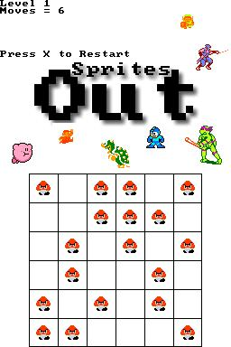

I developed Sprites Out as a free, open-source, Nintendo DS implementation of
the
Lights Out game.
Here's a screenshot of it running in a Nintendo DS emulator:

It was a fun adventure to develop my first Nintendo DS game, and be able to run it
on a portable system.